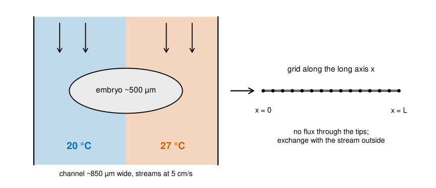
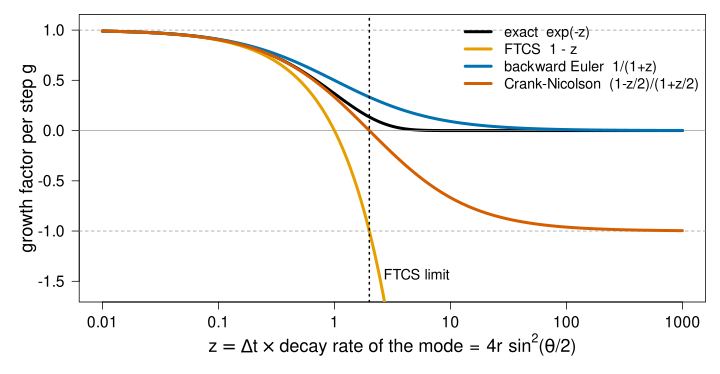
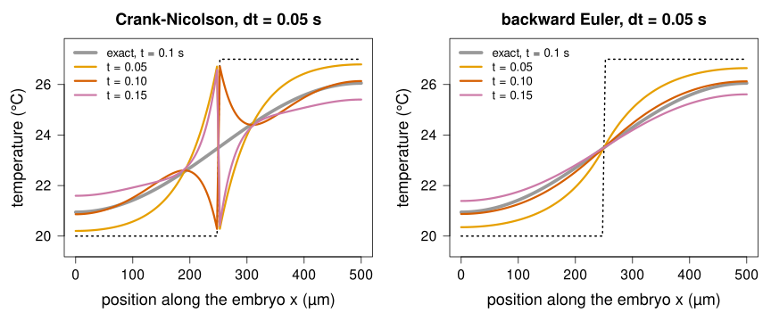
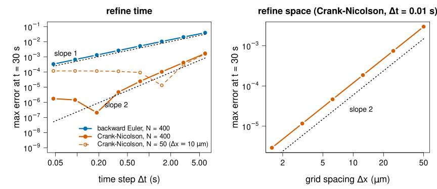
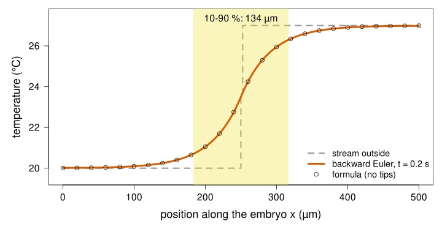
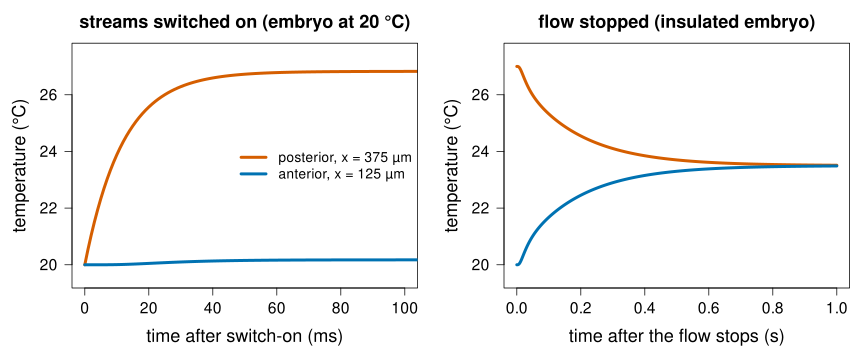

Part 10 — Diffusion and heat: finite-difference PDEs
Numerical analysis for biologists
About this lecture
FTCS is simple, but its time step must shrink with the square of the grid spacing. On a fine grid that means millions of steps for a few seconds of biology. Implicit schemes remove the limit.
Backward Euler and Crank–Nicolson for the diffusion equation: one tridiagonal solve per step, O(N) work with the Thomas algorithm.
Stable for every\Delta t. But Crank–Nicolson oscillates when the data are sharp and the step is large.
Accuracy: O(\Delta t) (backward Euler) or O(\Delta t^2) (Crank–Nicolson) in time, O(\Delta x^2) in space. Verify with an exact solution and with grid refinement.
Method of lines: the grid turns the PDE into a large, stiff ODE system; give it to lsoda or bdf.
Biology: a Drosophila embryo held between a cold and a warm stream [M1, M2]. How sharp is the temperature step inside it?
A biology problem first

Two laminar streams, 20 °C and 27 °C, flow past a live embryo, one on each half [M1]. The warm half develops faster: even-skipped stripes appear out of order.
Heat crosses 500 µm of water in about a second, so why does the embryo not just settle at the average? How sharp is the step inside it?
Explicit is too slow here
Heat obeys the diffusion equation \partial T/\partial t = D\,\partial^2 T/\partial x^2, with D the thermal diffusivity; water: D \approx 1.4\times10^{-7} m²/s = 1.4\times10^{5} µm²/s, 140 times a small molecule.
D <-1.4e-7*1e12# µm^2/sL <-500; N <-200; dx <- L / N # embryo, 2.5 µm griddx^2/ (2* D) # FTCS limit on dt (s)# [1] 2.232143e-05L^2/ D # time scale L^2/D (s)# [1] 1.785714(L^2/ D) / (dx^2/ (2* D)) # FTCS steps to cover it# [1] 80000
22 µs steps for a process that takes a second; halve \Delta x and it is 4 × as many steps.
Recap: FTCS and its limit
On the chamber of The diffusion (heat) equation by finite differences, with r = D\,\Delta t/\Delta x^2:
One implicit step reaches all points at once and stays between 0 and 1. FTCS overshoots to the source value and would then explode.
One tridiagonal solve per step
be_step <-function(c, r) { # c includes the two boundary values m <-length(c) -2; i <-2:(m +1) # m interior unknowns d <- c[i] d[1] <- d[1] + r * c[1] # source enters the first row d[m] <- d[m] + r * c[m +2] # sink enters the last row c[i] <-thomas(rep(-r, m), rep(1+2* r, m), rep(-r, m), d) c}
thomas(a, b, c, d) from Structure: symmetric, banded, sparse: sub-diagonal, diagonal, super-diagonal, right-hand side. About 8N operations.
So one implicit step costs a few times an explicit step, notN^3. Never build a dense N\times N matrix and call solve().
Fifteen steps instead of 1500
The chamber (N = 50, \Delta x = 10 µm), empty at t = 0, to t = 60 s:
r <- D *4/ dx^2# dt = 4 s: r = 40, FTCS needs r <= 0.5c <-c(1, rep(0, N))for (k in1:15) c <-be_step(c, r)round(c[c(6, 11, 26, 41)], 4) # x = 50, 100, 250, 400 µm# [1] 0.8781 0.7583 0.4294 0.1587round(exact(x[c(6, 11, 26, 41)], 60, L, D), 4)# [1] 0.8816 0.7650 0.4404 0.1650
FTCS (r = 0.4, 1500 steps) agrees with the exact values to 4 digits. Backward Euler with 15 steps is off by about 0.01.
Stable is not accurate. The error is now the time error of a 4 s step: order 1.
Stable for every time step

Per step a mode is multiplied by: FTCS 1 - z, backward Euler \frac{1}{1 + z}, with z = 4r\sin^2(\theta/2) \ge 0.
Backward Euler: 0 < g < 1 for everyz: unconditionally stable, and fast modes are killed (g \to 0).
Crank–Nicolson
Average the second difference over the old and the new level (the trapezoidal rule in time):
cn_step <-function(c, r) { m <-length(c) -2; i <-2:(m +1) d <- c[i] + r /2* (c[i -1] -2* c[i] + c[i +1]) # explicit half d[1] <- d[1] + r /2* c[1]; d[m] <- d[m] + r /2* c[m +2] c[i] <-thomas(rep(-r /2, m), rep(1+ r, m), rep(-r /2, m), d) c}
Same cost as backward Euler: one tridiagonal solve. Growth factor g = \frac{1 - z/2}{1 + z/2}: |g| \le 1 for every z, and second order in time.
Crank–Nicolson fails on sharp data

“Stop the flow”: the embryo starts with a sharp 20/27 °C step, no heat exchange, \Delta t = 0.05 s (r = 1120). Crank–Nicolson flips the step every time step; backward Euler is smooth and close to the exact curve.
Why, and what to do
High modes (z \gg 1) get g = \frac{1 - z/2}{1 + z/2} \approx -1 + \frac{4}{z}: they are not damped, only flipped. Sharp data (a step, an empty channel next to a full reservoir) is made of exactly these modes.
Chamber, empty at t = 0, 15 CN steps of 4 s: c at x = 10 µm is 1.1775, above the source value 1.
Check: values outside the initial/boundary range; changes that alternate in sign from step to step; disagreement with backward Euler.
Accuracy in time and space
The error at a fixed time has two parts:
\text{error} \approx C_t\,\Delta t^{\,p} + C_x\,\Delta x^2, \qquad p = 1 \text{ (backward Euler)},\quad p = 2 \text{ (Crank–Nicolson)}
scheme
time
space
stable for
FTCS
O(\Delta t)
O(\Delta x^2)
r \le 1/2
backward Euler
O(\Delta t)
O(\Delta x^2)
all \Delta t
Crank–Nicolson
O(\Delta t^2)
O(\Delta x^2)
all \Delta t (oscillates if r \gg 1)
Refining only one of them hits a floor set by the other.
Balance: backward Euler needs \Delta t \sim \Delta x^2 for equal errors (the FTCS step size again!); Crank–Nicolson only \Delta t \sim \Delta x.
Verify against an exact solution
Both reservoirs at 0, start with one sine: c(x, 0) = \sin(\pi x/L). The exact solution keeps its shape and decays: c = e^{-D(\pi/L)^2 t}\sin(\pi x/L).
sine_err <-function(N, dt, step, tend =30) { dx <- L / N; x <-seq(0, L, by = dx); c <-sin(pi * x / L)for (k in1:round(tend / dt)) c <-step(c, D * dt / dx^2)max(abs(c -exp(-D * (pi / L)^2* tend) *sin(pi * x / L)))}dts <-c(6, 3, 1.5, 0.75) # halve dt, fine grid N = 400e <-rbind(be =sapply(dts, function(h) sine_err(400, h, be_step)),cn =sapply(dts, function(h) sine_err(400, h, cn_step)))round(e[, -4] / e[, -1], 2) # error ratio per halving# [,1] [,2] [,3]# be 1.92 1.96 1.98# cn 4.03 4.06 4.23
Halving \Delta t halves the backward Euler error (order 1) and quarters the Crank–Nicolson error (order 2).
Error against step size

Left: slopes 1 and 2, then a floor at the space error (open circles: \Delta x = 10 µm). The dip: time and space errors of opposite sign cancel by luck.
Right: refine space with a tiny \Delta t: slope 2.
Try it: one time step, three schemes
Grid refinement without an exact solution
For the real problem there is no formula. Refine and watch the differences shrink:
T200 <-sapply(c(25, 50, 100, 200, 400), embryo_steady) # T at x = 200 µmT200# [1] 21.03408 21.05464 21.05237 21.05180 21.05166d <-diff(T200)round(d[-4] / d[-1], 2) # should approach 2^p = 4# [1] -9.05 3.98 4.00
Ratio 4 per halving: order 2, as designed. The answer is 21.0517 \pm 0.0002 °C.
The first ratio is not 4: \Delta x = 20 µm is too coarse to be in the asymptotic range. Never trust the order from the two coarsest grids.
Method of lines
Discretise space only. The PDE becomes N - 1 coupled ODEs, one per grid line:
\frac{d\mathbf c}{dt} = \frac{D}{\Delta x^2}A\,\mathbf c + \mathbf b
Backward Euler and Crank–Nicolson are just two ODE methods applied to it. Any ODE solver from Part 8 can take their place.
Eigenvalues of \frac{D}{\Delta x^2}A on the chamber: -0.039 to -40 per s. Ratio \approx (2N/\pi)^2 \approx 1000, and it grows 4 × with every halving of \Delta x.
A fine grid is always stiff: use a stiff solver (lsoda, bdf, radau), and tell it the Jacobian is banded.
Method of lines in R: ode.1D
The embryo (next slides) as 201 ODEs, from 20 °C to t = 0.1 s:
ode.1D tells the stiff solver the Jacobian is banded (nspec = 1: one species per grid point).
Plain ode() with lsoda: same 128 steps but 2655 f-evals, to build a dense 201\times201 Jacobian.
What the library controls, and what it does not
rtol, atol control the time error only. The space error is fixed by \Delta x before the solver starts: tightening the tolerance cannot fix a coarse grid.
Verify the two separately: refine the grid at tight tolerance; tighten the tolerance on a fixed grid.
Adaptive BDF starts with order 1 (backward Euler) and small steps: it handles sharp starts without CN’s oscillations.
Python: solve_ivp(rhs, ..., method="BDF", jac_sparsity=S) with S the tridiagonal pattern. Rust: no stiff solver in ode_solvers; write backward Euler or CN with Thomas by hand.
Back to the embryo: a 1D model
Along the long axis x (0 to 500 µm), heat diffuses and leaks to the stream just outside, T_\text{out}(x) = 20 or 27 °C:
\tau: time for heat to cross the 200 µm thickness. For a cylinder of radius R = 100 µm: \tau = R^2/(2.405^2 D) = 12 ms.
No flux through the tips (ghost points). Still tridiagonal: the leak only adds \Delta t/\tau to the diagonal.
Steady state: T = T_\text{out} \mp 3.5\,e^{-|x - L/2|/\lambda} with length scale\lambda = \sqrt{D\tau} = 42 µm.
How sharp is the step?

The 10–90 % transition is 2\lambda\ln 5 \approx134 µm, about a quarter of the embryo. Each half is within 0.5 °C of its stream over its outer 170 µm.
Numerical solution (line) and formula (circles) agree to 0.01 °C (the formula ignores the tips).
How fast does it form?

Streams on: steady within about 50 ms (\approx 4\tau). Development takes minutes, so the embryo always sees the steady profile.
Flow stopped (thought experiment): the step is gone within 1 s, the time scale L^2/(\pi^2 D) = 0.18 s of the slowest mode. The flow is what keeps the step.
Checks before you trust it
Exact solution: a sine mode decays as e^{-Dk^2t}. Check the order (error ratio 2 or 4 per halving), not just a small error.
Refine time and space separately; expect a floor from the other one. Watch for lucky cancellation.
Observed order from three grids without an exact solution; ignore the coarsest pair.
Crank–Nicolson: sign-alternating changes or values beyond the data range → smaller \Delta t near the start, or a few backward Euler steps first.
Method of lines: tolerance controls the time error only. Count steps: thousands of tiny steps mean an explicit solver on a stiff grid.
Physical checks: steady state, conservation with no-flux ends, values between the boundary temperatures.
Summary
Backward Euler: (I - rA)\mathbf c^{n+1} = \mathbf c^n + \mathbf b. Crank–Nicolson: (I - \tfrac r2 A)\mathbf c^{n+1} = (I + \tfrac r2 A)\mathbf c^n + \mathbf b. One Thomas solve per step, O(N).
Both are unconditionally stable. Backward Euler damps fast modes (g \to 0); Crank–Nicolson flips them (g \to -1): oscillations with sharp data and large r. Fix: backward Euler start steps or smaller \Delta t.
Error \approx C_t\Delta t^p + C_x\Delta x^2, p = 1 (BE) or 2 (CN). Verify with an exact sine mode and by refinement; read the order from the ratios.
Method of lines: the grid gives a stiff ODE system; ode.1D with lsoda/bdf, or solve_ivp(method="BDF", jac_sparsity=...). The tolerance does not control the grid error.
Embryo: the temperature step inside is set by \lambda = \sqrt{D\tau} \approx 42 µm: about 130 µm wide, formed within 50 ms.
Next:Steady state in two dimensions: no time at all, one big sparse solve.